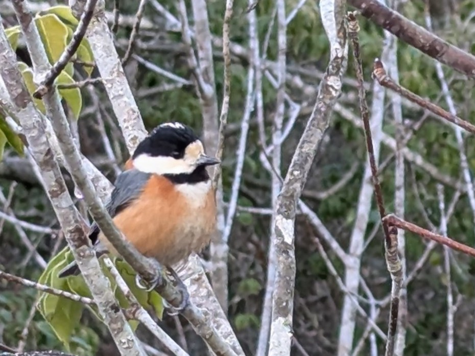
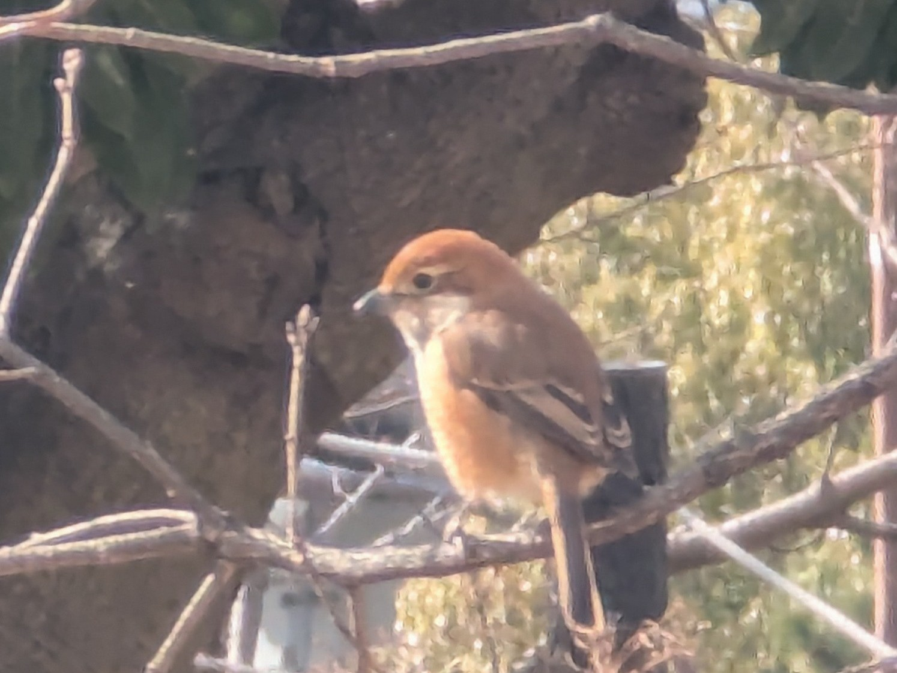

Likes
バードウォッチング
一番好きなのはルリビタキ。野鳥たちの魅力に気づいてから、早朝の公園に行ったり通学中見かける鳥たちを観察したりしています。まだ双眼鏡で眺めてるだけなので、いつか望遠カメラ買って写真に残したいなあ。

ヤマガラ
@有馬富士公園(兵庫県三田市)

モズ♀
@ポートアイランド中央緑地(兵庫県神戸市中央区)
イラスト
もともと絵師たちのイラストを見るのが好きでした。ずっと自分でも描きたいなと思っており、バイト代で液タブを購入してからいろいろ描くようになりました。まだまだ初心者です。オリキャラばっか描いてて、まだ二次創作は恐れ多い...。
IT系
小学生の時に見た、Unity上で1,000mの滑り台を滑ったり、遺伝的アルゴリズムでブランコ一回転に挑戦したりする動画が全ての元凶。最初はMinecraftのレッドストーン回路だったものが、今ではRaspberry PiでUbuntu Server建ててみたり、Androidアプリを作ったりするようになりました。ほとんど独学。フロントエンドからサーバーサイドまで、幅広いプラットフォームを扱えるようになりました。
言語系
| C# | Unityを扱いたいと一番最初に独学した言語。すべての元凶。今や一番得意な言語です。 |
|---|---|
| C言語 | ポインタ操作や動作の軽さが好き。 |
| Lua | ComputerCraftというマイクラのMODで導入される言語のために学習。 |
| UdonSharp | VRChatでワールド作成のための言語。いかにU#の制約を抜けるられるかがミソ。 |
| Java | 専門学校で学んだ。 |
| Python | 汎用性の高さと実行の手軽さがいいね。 |
| HTML | 大昔から自分だけのサイトを作りたくて。 |
| JavaScript | アニメーションがきらきらしてるサイトを作りたくて学んだ。 |
| jQuery | Ajax通信とかアニメーションとかがしたくて一番実装が簡単っていう理由で今でも使ってる。 |
| CSS | 理想のサイトには不可欠だった。今やCSS標準でアニメーションできるみたいやね。 |
| PHP | 超簡単にサーバーサイドスクリプトが組めるから好き。 |
| SQL | DBを学ぶまではtxtファイルをPHPで作成してたのは内緒。 |
| Kotlin | 今までで一番難しい言語だと思う。 |
| Thyme | Algodooという物理演算ゲームもよく遊んでました。触れたのはC#よりも前だから元凶の元凶かもしれない。 |
| レッドストーン回路 | WiiUでマイクラしてたときに、建築よりもサバイバルよりもRS回路組んで遊んでたと思う。元凶の元凶の元凶。 |
環境
| Unity | Unityでシミュレーションしたかったのが一番最初のきっかけ。最初の頃はWiiリモコンで操作できる車運転ゲームを作って遊んでました。ML-Agentsで機械学習してみたこともあります。今では基本はVRChatでギミックとかワールドとか作るために使ってます。あとはC#オンリーでアプリを作ったりとかも。 |
|---|---|
| Ubuntu Server | CLIをカタカタするのたのしい。ネットの人たちとマイクラサーバーで遊ぶためや、動的なWEBサイトのために、実際にVPSを借りたことも何度かあります。仮想マシンで0から構築するのも好きです。 |
| Raspberry Pi 5 | ずっと欲しいなって思っており、最近やっと購入しました。いつもはUbuntu Serverを導入して、部屋で流れる時報システムと、NASとして動作中です。今後いろんな実験に使われる予定です。 |
ゲーム
基本的にはPCでモノづくりしてることのほうが多いですが、スマホやPCでゲームをすることもよくあります。
音ゲー
| Deemo | 初めての音ゲー。ピアノの音色が素敵で感動しました。一番好きな楽曲はNine Point Eight。 |
|---|---|
| Cytus2 | 色んな種類の楽曲に惹かれました。Deadly Slot GameのGlitch譜面がめっちゃ楽しい。NekoのI can avoid it.#φωφが好きです。 |
| Rotaeno | スマホ本体を回転させるというのが画期的でとても楽しいです。シークレット・プラネットが5拍子で好き。 |
ストーリー・RPG
| 魔法少女ノ魔女裁判 | キャラデザがとてもかわいいゲームでした。今までやってきたゲームの中で一番泣きました。号泣。桜羽エマ推し。 |
|---|---|
| ソフィーのアトリエ | 戦闘BGMの雲雀東風を聞いてみたら、めちゃくちゃ良い曲だなと思い、せっかくなので元ネタゲームの方もやろうと思いプレイ。現在進行中。そしてアトリエシリーズのBGMめちゃくちゃいいわね...。 |
ソシャゲ
| ステラソラ | アークナイツきっかけにYostarのソシャゲばっかりを触れてきたのですが、アクション味の強いこのゲームが個人的に一番ハマりました。ファンタジーな世界観に神器という現代技術の組み合わせが素敵。トーナという女が、とても頑張り屋さんですごく良いわね...。 |
|---|
その他
| Minecraft | 工業化MODでよく遊んでいます。きっかけは隠居生活。 |
|---|---|
| GeoGuessr | 位置情報を特定するだけでこんなに楽しいなんて。 |
| VRChat | 自分で作ったギミックをVRChatで遊べるのた楽しい。 |
音楽
聞く側です。でもいつかなにか楽器を上手に弾けるようになってみたいなあ。好きな音楽は何でもとにかくプレイリストにぶち込んで鬼リピします。コード進行については詳しく知りませんが、感覚でここのコードいいなあとかにわかながらによく分析ごっこしています。ジャンルに関してはほぼこだわりなく聞きますが、強いて挙げるならポストロックとかケルトとかが好きだと思います。
もしよければこれもどうぞ👇️
私の好きな曲の中でも厳選の曲たち[↗]
好きなアーティスト(敬称略)
| Qutabire | ケルトにハマるきっかけでした。 YouTubeにおすすめされた 彗光、星空通りにて を聞いたときに一目惚れしました。ケルトとエレクトリックって混ぜ合わせていいんだ！って感動しました。それからアトリエシリーズのBGMにハマったり、いろんな音ゲー曲の魅力にも気づいていったりしました。 QutabireさんのCDは全部買ってます。ホンマにすこ。 |
|---|---|
| クラムボン | 有名な「波よせて」のカバー曲や、ライザのアトリエ２の主題歌であることもあって、存在は知っていました。 そんなときにバイト先で Don't you know がUSENで流れてきて、なんだこの素敵な音楽は...!となり、調べていくうちにハマっていきました。心地よいなと感じるクラムボンのジャンルの多くがポストロックと呼ばれるものだと知ったのはそのあとでした。優しい感じが本当に好きだなあ。 |
| ななひら | YouTube Musicのハイライトで、よく聞いた上位のアーティストに毎月ランクインしているので、潜在的に好きなんだと思います。ななひら氏はボーカリストなので、楽曲がというより、あの「ザ・萌え声」が好きなんだと思います。渋谷系と呼ばれる音楽の特徴の一つに、都会チックなものもあってそれが好きなんですが、 ひみつのジュテーム♪ はとてもそれに当てはまっていてめちゃくちゃ好きです。 |
| 星野源 | こちらもハイライトに頻繁にランクインしているので入れておきました。実際彼の曲は好きですし、多分頻繁にブラックアダーコード入ってますよね。このコードの存在自体はゆゆうた氏で知りましたが。普段ドラマは見ないのでその内容は全然知りませんが、 アイデア が好きです。ギターの感じで東京事変を感じたので調べてみたら同じ奏者で、こういう点と点がつながるところも音楽の面白いところだなと思いました。 |
マンガ・ラノベ
ラノベはなろうじゃないやつをよく読みます。マンガはきらら系ばっかです。
ラノベ
| 狼と香辛料 | 中学のときに、けもみみがかわいいラノベはないかな～って見つけたのがこれでした。ホロとロレンスの冗談の掛け合いと経済学的な話で頭を使うのがとてもおもしろいと感じます。行商人ゆえに旅をしていろんな人物と出会うストーリー。今でも少しずつ読んでおり、現在17巻。 |
|---|---|
| 魔女の旅々 | 主人公イレイナの真面目さとたまに出る適当さとビジュがいい感じに絡み合ってて面白くて好きです。話ごとにちがったテイストのストーリーを楽しめるのがいいですよね。これも同じく出会いと別れの旅の話だなって最近気づいた。 |
マンガ
| しあわせ鳥見んぐ | バードウォッチングを始めるきっかけになった作品です。登場人物が大学生ってのが自由度が高くていいなあ。すずとつばさの百合もっとください。山形まで聖地巡礼に行きたいです。 |
|---|---|
| まちカドまぞく | アニメで知って、それがとっても面白かったので単行本も買いました。アニメ1期2期以降の話が5,6巻で読めるのですが、2期でにじみ出てきたシリアスが一気に溢れ出てきて、キャラデザとのギャップがとても良いなと思いました。 |
| 恋する小惑星（アステロイド） | これもアニメのビジュに惹かれましたが、いざ内容を見てみると、地学中心に理系理系していて、めちゃくちゃ好きになりました。可愛い女の子たちが柱状節理だの変光星だの言ってるの最高すぎるだろ！国土百合院。 |
| 魔法使いロゼの佐渡ライフ | しあわせ鳥見んぐ読んでるときにおすすめに出てきました。現実世界＋ファンタジーなストーリーが私は好きなようです。鳥見んぐの飛島と合わせて佐渡島も行ってみたいです。 |